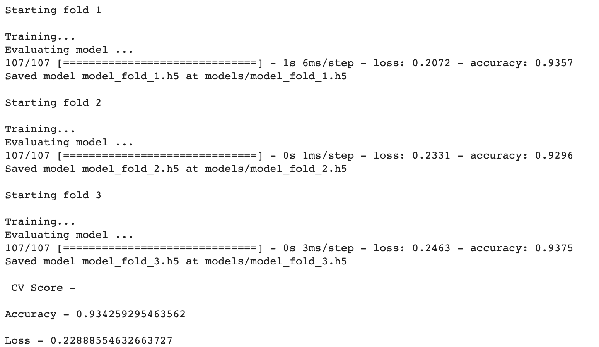

004 : Dog Breed Prediction
This technical report outlines the process of training a deep learning model for dog breed classification
using a dataset of dog images.
The goal is to create a model that can classify dog images into one of 120 different breeds, which in
actual, achieving high accuracy (93%).
The code provided utilizes several pre-trained convolutional neural networks (CNNs) as feature extractors
and a simple deep neural network (DNN) for classification.
Dataset
The dataset used for this task consists of dog images categorized into 120 different breeds. The dataset contains a list of image filenames and their corresponding breed labels. Key components of the dataset processing include:
- Data Loading: The code loads a list of image filenames and their associated labels. The images are read, resized to a specified dimension (331x331), and stored in the `X` array, while their corresponding breed labels are stored in the `Y` array.
- Label Encoding (One-Hot): The integer class indices in the `Y` array are further
converted into one-hot encoded vectors using the
to_categoricalfunction from Keras.

Training Dataset (Source: Kaggle)

Streamlit Deployment UI
Feature Extraction
Feature extraction is a crucial step in deep learning when working with pre-trained models.
The code uses the following pre-trained CNN architectures as feature extractors:
- InceptionV3
- InceptionResNetV2
- Xception
Model Architecture
A simple DNN is used for classification on top of the extracted features.
The DNN architecture includes the following layers:
- The model is compiled using the
Adam optimizerandcategorical cross-entropy loss, which is suitable for multi-class classification tasks. - Input Layer: The input shape matches the size of the concatenated feature vectors from the CNNs.
- Dropout Layer: A dropout layer with a dropout rate of 0.7 is added for regularization.
- Dense Layer: A dense layer with 120 units (equal to the number of dog breeds) and a
softmax activationfunction for multi-class classification.
Model Training & Validation
The training process involves splitting the dataset into multiple folds using
stratified k-fold cross-validation (in this case, 3 folds). Each fold is used as both the
training and validation set in different iterations.
Training includes the following steps:
- Model Initialization: For each fold, a new instance of the DNN model is created.
- Model Compilation: The DNN is compiled with the Adam optimizer, categorical cross-entropy loss, and accuracy as the evaluation metric.
- Training:
The model is trained on the extracted features from the training fold for a specified number of
epochs. An
early stopping callbackis used to prevent overfitting and to save the best model. - Validation: The model's performance is evaluated on the validation fold, and accuracy and loss metrics are recorded.

Model Results & Conclusion
The training process is repeated for each fold, resulting in three separate trained models.
The results are evaluated using the following metrics:
- Accuracy: The average accuracy across the folds is computed to assess the model's overall performance.
- Loss: The average loss across the folds is calculated as a measure of model performance.
- The trained models are saved for future use, allowing for dog breed classification on new images. 
Conclusion:
In this experiment, I presented a comprehensive overview of the process of training a deep learning model for dog breed classification. The combination of pre-trained CNNs for feature extraction and a DNN for classification yielded a competitive performance in classifying dog breeds. The model's ability to generalize to new data can make it a valuable tool for dog breed recognition tasks. Further improvements could be made by fine-tuning the pre-trained models or experimenting with different architectures.
Model Demo
The model is deployed on Streamlit.